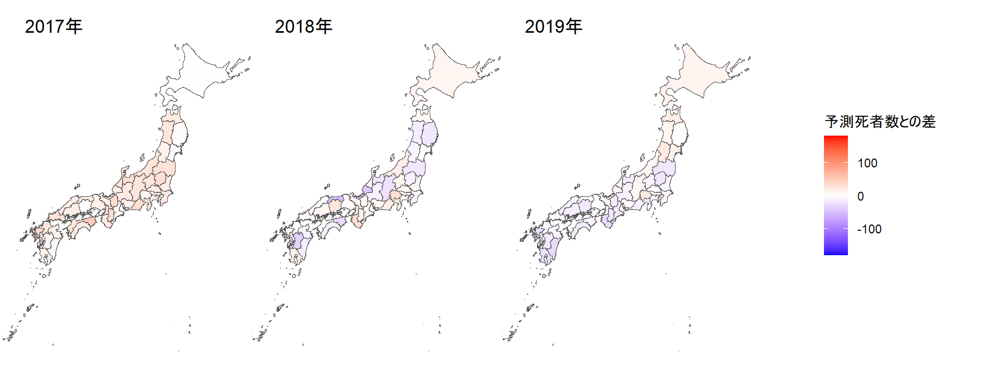
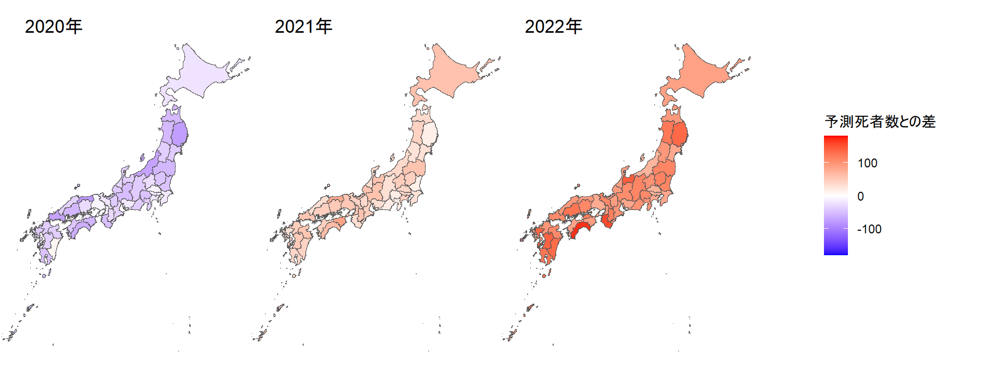
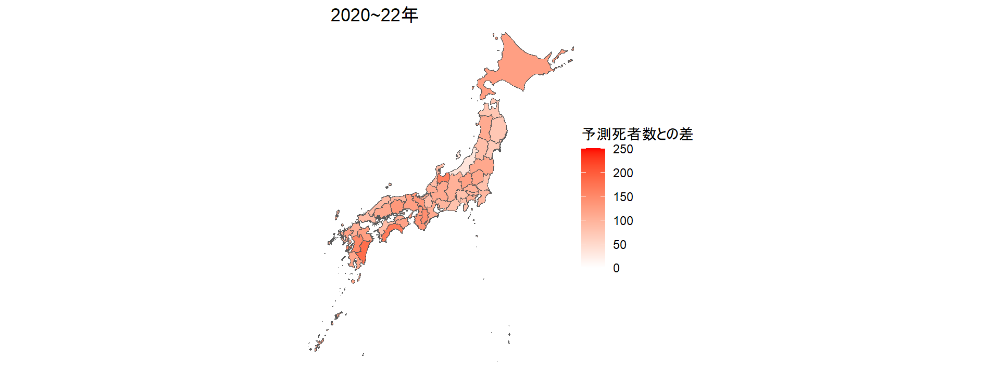
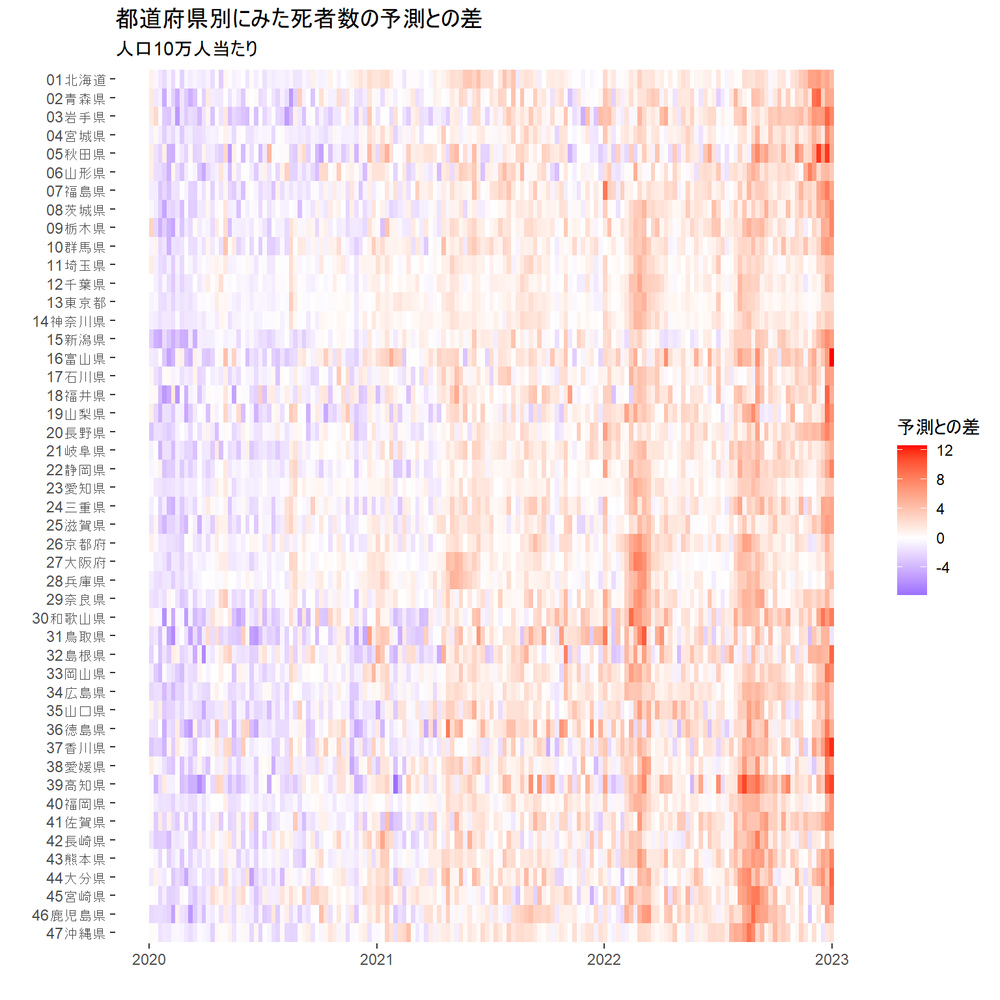
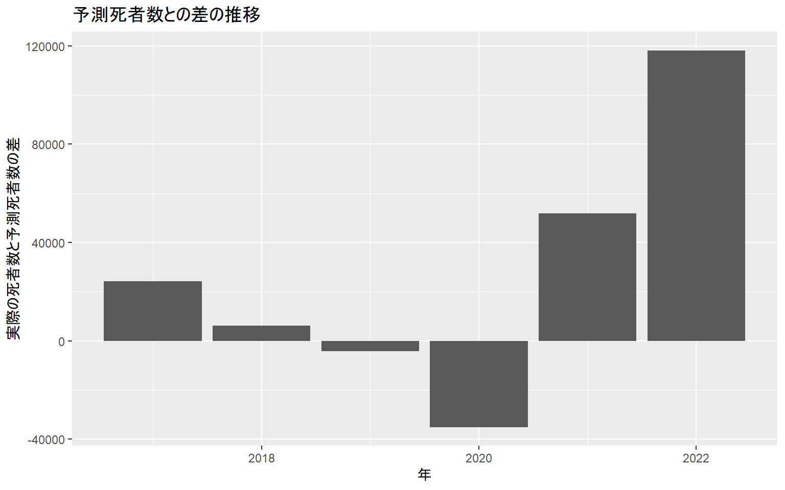
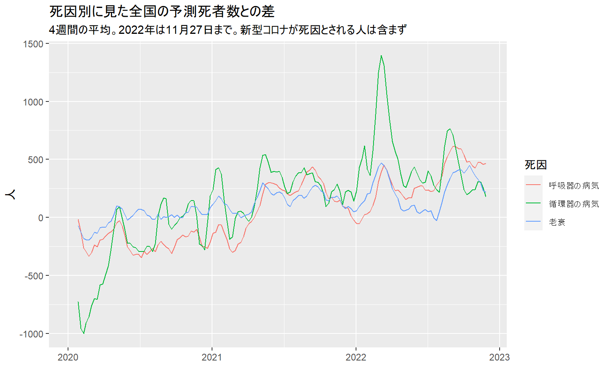

新型コロナウイルス感染症が2020年始めから流行し始めて、3年超が過ぎた。この間、たとえコロナが死因とはされていなくても、コロナにかかったことによる持病の悪化や、コロナ患者の急増にともなう医療の逼迫など、さまざまな理由で亡くなる人が増えている。
3年間の死者は具体的にどれだけ増えたのか。原因は何だったのか。朝日新聞は、厚生労働省研究班が公表している「予測死者数」を、実際に報告された死者数と比較するという手法で分析し、報道した。
予測死者数には不確実さがあるため、一定の幅をもって公表されるが、その幅の中でおおむね真ん中にあたる「点推定値」を採用した。研究班の橋爪真弘・東京大教授と野村周平・慶応大特任准教授に相談しながら、分析手法を検討した。
この資料では、データをどこから得てどう分析したか、Rのコードとともに説明する。
死者数と予測死者数のデータ：日本の超過および過少死亡数ダッシュボード（https://exdeaths-japan.org/）
都道府県別の人口：2020年国勢調査（https://www.stat.go.jp/data/kokusei/2020/kekka.html）
死者数が報告された「週」と「年」との対応：国立感染症研究所（https://www.niid.go.jp/niid/ja/calendar.html）
都道府県別の地図：地図蔵（https://japonyol.net/editor/article/47-prefectures-geojson.html）
tidyverseとsf、cowplot、gridExtraという4種類のパッケージを使う。
library(tidyverse)
library(sf)
library(cowplot)
library(gridExtra)厚労省研究班のサイトから取得した予測死者数（全体と死因別の2種類ある）を、人口などのデータと合体させるなどの加工、整形をする。
# 各都道府県に割り振る数字２桁のID
prefID <- read_csv("data/pref.csv")
# 国勢調査をもとにした各都道府県の人口
population2020 <- read_csv("data/population2020.csv")
# 死者数が報告された「週」と「年」との対応
epidem_year <- read_csv("data/epidem_year.csv") %>%
mutate(date=as.Date(date))
# 全体の死者数と予測死者数
est <- read_csv("data/Estimates/Estimates_weighted.csv") %>%
pivot_longer(cols = c(-week_ending_date),
names_to = "pref_method",
values_to = "value") %>%
mutate(pref_method = str_split(pref_method,"_",simplify=T)) %>%
mutate(prefEN = pref_method[,1],
method = pref_method[,2]) %>%
select(-pref_method) %>%
pivot_wider(names_from = method,
values_from = value) %>%
rename(observed = Observed,
est_point = Estimated,
est_upper = `95Upper`,
est_lower = `95Lower`) %>%
mutate(year = str_sub(week_ending_date,6,9),
month = str_sub(week_ending_date,3,5),
day = str_sub(week_ending_date,1,2)) %>%
mutate(month=ifelse(month=="jan","01",
ifelse(month=="feb","02",
ifelse(month=="mar","03",
ifelse(month=="apr","04",
ifelse(month=="may","05",
ifelse(month=="jun","06",
ifelse(month=="jul","07",
ifelse(month=="aug","08",
ifelse(month=="sep","09",
ifelse(month=="oct","10",
ifelse(month=="nov","11",
ifelse(month=="dec","12",month))))))))))))) %>%
mutate(date=as.Date(str_c(year,"-",month,"-",day))) %>%
left_join(prefID) %>%
select(date, prefID, pref, prefEN, observed, est_point, est_upper, est_lower) %>%
arrange(date) %>%
left_join(population2020) %>%
left_join(epidem_year)
# 死因別に分けた死者数と予測死者数
est_cause <- bind_rows(read_csv("data/Estimates/Estimates_weighted_Circulatory.csv") %>%
mutate(cause="circulatory"),
read_csv("data/Estimates/Estimates_weighted_Cancer.csv") %>%
mutate(cause="cancer"),
read_csv("data/Estimates/Estimates_weighted_non-COVID-19.csv") %>%
mutate(cause="non_COVID"),
read_csv("data/Estimates/Estimates_weighted_Respiratory.csv") %>%
mutate(cause="respiratory"),
read_csv("data/Estimates/Estimates_weighted_Senility.csv") %>%
mutate(cause="senility"),
read_csv("data/Estimates/Estimates_weighted_Suicide.csv") %>%
mutate(cause="suicide")) %>%
pivot_longer(cols=c(-week_ending_date,-cause),
names_to = "pref_method",
values_to = "value") %>%
mutate(pref_method=str_split(pref_method,"_",simplify=T)) %>%
mutate(prefEN=pref_method[,1],
method=pref_method[,2]) %>%
select(-pref_method) %>%
pivot_wider(names_from = method,
values_from = value) %>%
rename(observed = Observed,
est_point = Estimated,
est_upper = `95Upper`,
est_lower = `95Lower`) %>%
mutate(year=str_sub(week_ending_date,6,9),
month=str_sub(week_ending_date,3,5),
day=str_sub(week_ending_date,1,2)) %>%
mutate(month=ifelse(month=="jan","01",
ifelse(month=="feb","02",
ifelse(month=="mar","03",
ifelse(month=="apr","04",
ifelse(month=="may","05",
ifelse(month=="jun","06",
ifelse(month=="jul","07",
ifelse(month=="aug","08",
ifelse(month=="sep","09",
ifelse(month=="oct","10",
ifelse(month=="nov","11",
ifelse(month=="dec","12",month))))))))))))) %>%
mutate(date=as.Date(str_c(year,"-",month,"-",day))) %>%
left_join(prefID) %>%
select(date, prefID, pref, prefEN, cause, observed, est_point, est_upper, est_lower) %>%
arrange(date) %>%
left_join(epidem_year)
# 都道府県別の地図データに死者数のデータを合体させる
jpmap <- st_read("data/prefectures.geojson") %>%
mutate(pref=as.character(name)) %>%
select(-name) %>%
left_join(est %>%
group_by(prefID, pref, epidem_year, population2020) %>%
summarize(observed=sum(observed),
est_point=sum(est_point)) %>%
ungroup() %>%
mutate(exdeath = observed-est_point) %>%
mutate(exdeath_pop = exdeath*100000 / population2020) %>%
select(-observed, -est_point) %>%
pivot_wider(names_from = epidem_year,
values_from = c(exdeath,exdeath_pop)))## Reading layer `prefectures' from data source
## `C:\Users\exdeaths\data\prefectures.geojson'
## using driver `GeoJSON'
## Simple feature collection with 47 features and 2 fields
## Geometry type: MULTIPOLYGON
## Dimension: XY
## Bounding box: xmin: 122.9338 ymin: 24.04571 xmax: 153.9869 ymax: 45.55628
## Geodetic CRS: WGS 84# 人口10万人当たりの予測死者数との差を地図にする
jpmap17 <- jpmap %>%
mutate(予測死者数との差=exdeath_pop_2017) %>%
ggplot() +
geom_sf(aes(geometry=geometry,fill=予測死者数との差)) +
scale_fill_gradient2(high="red",low="blue",mid = "white",
midpoint = 0,
limits=c(-180,180)) +
theme_void() +
coord_sf(xlim = c(127, 147), ylim = c(25, 46),
crs = st_crs("+proj=longlat +datum=WGS84 +no_defs"),
expand = FALSE) +
labs(title=" 2017年")
jpmap18 <- jpmap %>%
mutate(予測死者数との差=exdeath_pop_2018) %>%
ggplot() +
geom_sf(aes(geometry=geometry,fill=予測死者数との差)) +
scale_fill_gradient2(high="red",low="blue",mid = "white",
midpoint = 0,
limits=c(-180,180)) +
theme_void() +
coord_sf(xlim = c(127, 147), ylim = c(25, 46),
crs = st_crs("+proj=longlat +datum=WGS84 +no_defs"),
expand = FALSE) +
labs(title=" 2018年")
jpmap19 <- jpmap %>%
mutate(予測死者数との差=exdeath_pop_2019) %>%
ggplot() +
geom_sf(aes(geometry=geometry,fill=予測死者数との差)) +
scale_fill_gradient2(high="red",low="blue",mid = "white",
midpoint = 0,
limits=c(-180,180)) +
theme_void() +
coord_sf(xlim = c(127, 147), ylim = c(25, 46),
crs = st_crs("+proj=longlat +datum=WGS84 +no_defs"),
expand = FALSE) +
labs(title=" 2019年")
jpmap20 <- jpmap %>%
mutate(予測死者数との差=exdeath_pop_2020) %>%
ggplot() +
geom_sf(aes(geometry=geometry,fill=予測死者数との差)) +
scale_fill_gradient2(high="red",low="blue",mid = "white",
midpoint = 0,
limits=c(-180,180)) +
theme_void() +
coord_sf(xlim = c(127, 147), ylim = c(25, 46),
crs = st_crs("+proj=longlat +datum=WGS84 +no_defs"),
expand = FALSE) +
labs(title=" 2020年")
jpmap21 <- jpmap %>%
mutate(予測死者数との差=exdeath_pop_2021) %>%
ggplot() +
geom_sf(aes(geometry=geometry,fill=予測死者数との差)) +
scale_fill_gradient2(high="red",low="blue",mid = "white",
midpoint = 0,
limits=c(-180,180)) +
theme_void() +
coord_sf(xlim = c(127, 147), ylim = c(25, 46),
crs = st_crs("+proj=longlat +datum=WGS84 +no_defs"),
expand = FALSE) +
labs(title=" 2021年")
jpmap22 <- jpmap %>%
mutate(予測死者数との差=exdeath_pop_2022) %>%
ggplot() +
geom_sf(aes(geometry=geometry,fill=予測死者数との差)) +
scale_fill_gradient2(high="red",low="blue",mid = "white",
midpoint = 0,
limits=c(-180,180)) +
theme_void() +
coord_sf(xlim = c(127, 147), ylim = c(25, 46),
crs = st_crs("+proj=longlat +datum=WGS84 +no_defs"),
expand = FALSE) +
labs(title=" 2022年")
jpmap20_22 <- jpmap %>%
mutate(予測死者数との差 = (exdeath_2020 + exdeath_2021 + exdeath_2022)*100000 / population2020) %>%
ggplot() +
geom_sf(aes(geometry=geometry,fill=予測死者数との差)) +
scale_fill_gradient2(high="red",low="blue",mid = "white",
midpoint = 0,
limits=c(0,250)) +
theme_void() +
coord_sf(xlim = c(127, 147), ylim = c(25, 46),
crs = st_crs("+proj=longlat +datum=WGS84 +no_defs"),
expand = FALSE) +
labs(title=" 2020~22年")死者数が予測と比べてどれだけ多かったのか（あるいは少なかったのか）を、人口10万人当たりにして地図に描く。2017～19年の死者数は、各県とも予測とあまり差がなかったが、20年には予測を大きく下回った。21年には一転して予測を大きく上回り、22年にはその差がさらに拡大していることが見てとれる。
legend <- get_legend(jpmap17)
# コロナ禍前の３年間
grid.arrange(arrangeGrob(jpmap17 + theme(legend.position = "none"),
jpmap18 + theme(legend.position = "none"),
jpmap19 + theme(legend.position = "none"),
legend,nrow = 1))
# コロナ禍の３年間
grid.arrange(arrangeGrob(jpmap20 + theme(legend.position = "none"),
jpmap21 + theme(legend.position = "none"),
jpmap22 + theme(legend.position = "none"),
legend,nrow = 1))
# コロナ禍の３年間合計
jpmap20_22
地図ではデータを年ごとにまとめたが、出典とした厚労省研究班の資料には週ごとのデータが記録されている。これを利用して三つのグラフを作る。
・予測死者数との差を都道府県別、週別に見た３年間分のヒートマップ
・全国の予測死者数との差を年ごとに示した棒グラフ
・循環器疾患、呼吸器疾患、老衰が原因で亡くなった人の数を各死因の予測死者数と比べた折れ線グラフ
# ３年間の都道府県別ヒートマップ
est %>%
filter(epidem_year %in% c("2020","2021","2022"),
prefID!="48") %>%
mutate(予測との差 = 100000*(observed-est_point) / population2020,
id_pref = str_c(prefID, pref)) %>%
ggplot(aes(date,
fct_rev(id_pref),
fill=予測との差)) +
geom_tile() +
scale_fill_gradient2(high="red",low="blue",mid = "white",
midpoint = 0) +
theme(panel.background = element_rect(fill = "white")) +
labs(title="都道府県別にみた死者数の予測との差",
subtitle="人口10万人当たり",
x="",y="")
# 実際の死者数と予測死者数との差がどう変化したかを示す棒グラフ
est %>%
filter(pref=="全国",
epidem_year %in% c("2017","2018","2019","2020","2021","2022")) %>%
group_by(epidem_year) %>%
summarize(observed=sum(observed),
est_point=sum(est_point)) %>%
mutate(exdeath=observed-est_point) %>%
ggplot(aes(epidem_year,exdeath)) +
geom_bar(stat="identity") +
labs(title="予測死者数との差の推移",
x="年",
y="実際の死者数と予測死者数の差")
# 死因別に見た全国の予測死者数との差を示す折れ線グラフ
est_cause %>%
filter(cause %in% c("circulatory","respiratory","senility"),
epidem_year %in% c("2020","2021","2022"),
pref=="全国") %>%
mutate(exdeath=observed-est_point) %>%
group_by(cause) %>%
mutate(exdeath_4w=((lag(exdeath,3)+lag(exdeath,2)+lag(exdeath,1)+exdeath)/4)) %>%
ungroup() %>%
select(date,cause,exdeath,exdeath_4w) %>%
mutate(cause=ifelse(cause=="circulatory","循環器の病気",
ifelse(cause=="respiratory","呼吸器の病気",
ifelse(cause=="senility","老衰",cause)))) %>%
rename(死因=cause) %>%
ggplot(aes(date,exdeath_4w,color=死因)) +
geom_line() +
labs(title="死因別に見た全国の予測死者数との差",
subtitle="4週間の平均。2022年は11月27日まで。新型コロナが死因とされる人は含まず",
x="",
y="人")
記事に掲載する地図とグラフを作るため、朝日新聞社のデザイナー（加藤啓太郎さんと言います）に提出するデータを作る。
# 地図を作るためのデータ
est %>%
group_by(prefID,pref,epidem_year,population2020) %>%
summarize(observed=sum(observed),est_point=sum(est_point)) %>%
ungroup() %>%
mutate(exdeath=observed-est_point) %>%
mutate(exdeath_pop=exdeath*100000/population2020) %>%
select(-observed,-est_point) %>%
pivot_wider(names_from = epidem_year,
values_from = c(exdeath,exdeath_pop)) %>%
mutate(exdeath_pop_3years = exdeath_pop_2020 + exdeath_pop_2021 + exdeath_pop_2022) %>%
write_excel_csv("data/for_designer/exdeath_map.csv")
# ヒートマップを作るためのデータ
est %>%
filter(epidem_year %in% c("2020","2021","2022"),prefID!="48") %>%
mutate(exdeath_pop=100000*(observed-est_point)/population2020,
id_pref=str_c(prefID,pref)) %>%
select(date,prefID,pref,exdeath_pop) %>%
pivot_wider(names_from = date,values_from = exdeath_pop) %>%
write_excel_csv("data/for_designer/exdeath_heatmap.csv")
# 実際の死者数と予測死者数との差がどう変化したかを示す棒グラフ
est %>%
filter(pref=="全国",
epidem_year %in% c("2017","2018","2019","2020","2021","2022")) %>%
group_by(epidem_year) %>%
summarize(observed=sum(observed),
est_point=sum(est_point)) %>%
mutate(exdeath=observed-est_point) %>%
write_excel_csv("data/for_designer/exdeath_year.csv")
# 死因別折れ線グラフのためのデータ
est_cause %>%
filter(cause %in% c("circulatory","respiratory","senility"),
epidem_year %in% c("2020","2021","2022"),
pref=="全国") %>%
mutate(exdeath=observed-est_point) %>%
group_by(cause) %>%
mutate(exdeath_4w=((lag(exdeath,3)+lag(exdeath,2)+lag(exdeath,1)+exdeath)/4)) %>%
ungroup() %>%
select(date,cause,exdeath,exdeath_4w) %>%
mutate(cause=ifelse(cause=="circulatory","循環器の病気",
ifelse(cause=="respiratory","呼吸器の病気",
ifelse(cause=="senility","老衰",cause)))) %>%
rename(死因=cause) %>%
pivot_wider(names_from = 死因,values_from = c("exdeath","exdeath_4w")) %>%
write_excel_csv("data/for_designer/exdeath_cause.csv")以上。